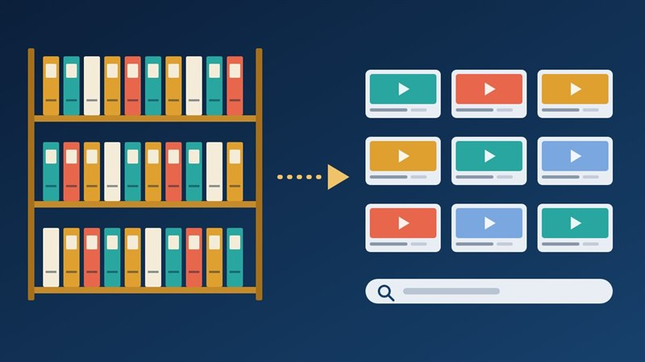
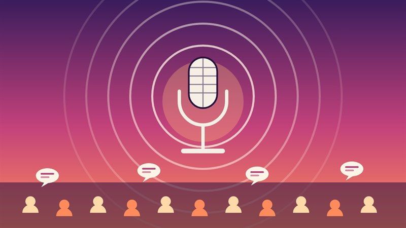
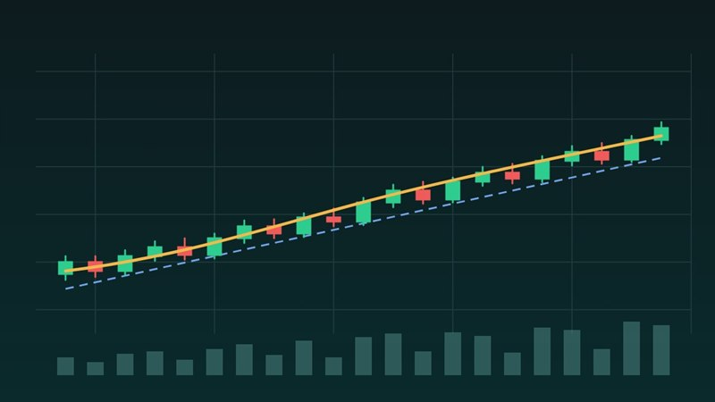
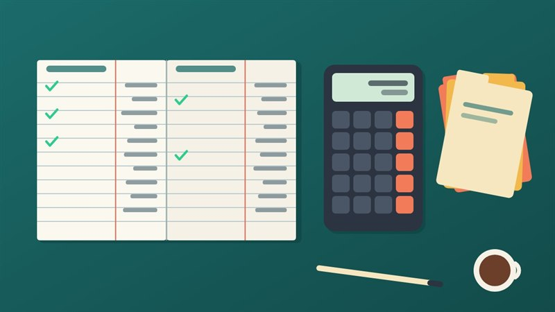

Digital Media Archive: Cataloging Sports Content
Digitized, cataloged and organized archival content in an enterprise media library, supporting television production teams.
With ongoing Master's studies in Artificial Intelligence, an MBA, and a Bachelor's degree in Communication Sciences, I combine strategic business thinking, analytical skills, and clear communication to drive innovation and deliver value.

Digitized, cataloged and organized archival content in an enterprise media library, supporting television production teams.

Coordinated program production, digital marketing activity and community engagement across channels for a radio show.

Applying financial technical analysis to investment and portfolio analysis, building on formal training in technical analysis for finance and investment.

Supported administrative, documentation, organization and day-to-day operational workflows for an accounting firm.